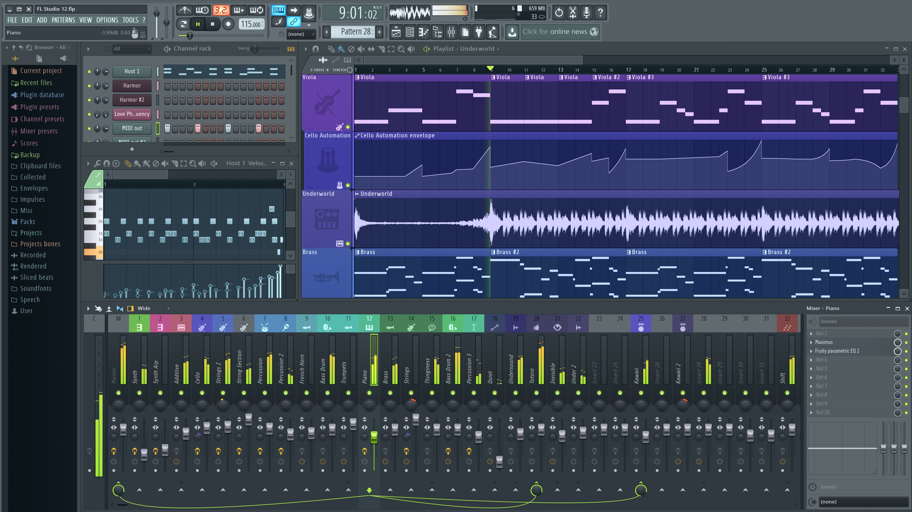
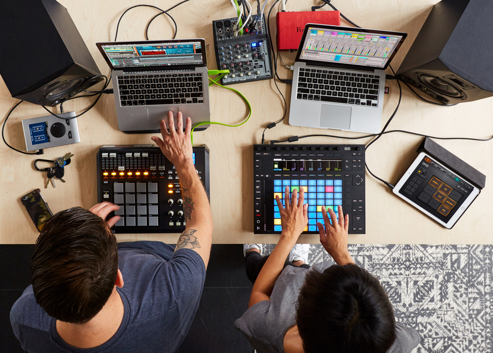

Технологический процесс создания музыки с помощью компьютерных программ
Что такое цифровое музыкальное производство?
Цифровое производство музыки — это создание композиций с использованием программ (DAW). Оно включает этапы: идея, запись, аранжировка, сведение и мастеринг. Преимущества: доступность, гибкость, высокое качество звука.

Инструменты для создания музыки
DAW: Ableton Live, FL Studio, Logic Pro, Pro Tools.
Мастеринг: повышение громкости, улучшение качества, подготовка к релизу.
Инструменты: iZotope Ozone, Waves plugins.

Будущее музыкального производства
Цифровые технологии упрощают создание музыки. Искусственный интеллект (AI) генерирует мелодии, автоматизирует сведение. VR/AR позволяют работать в виртуальных студиях. Перспективы: новые жанры, облачные DAW (BandLab), AI-плагины (Amper Music, LANDR).